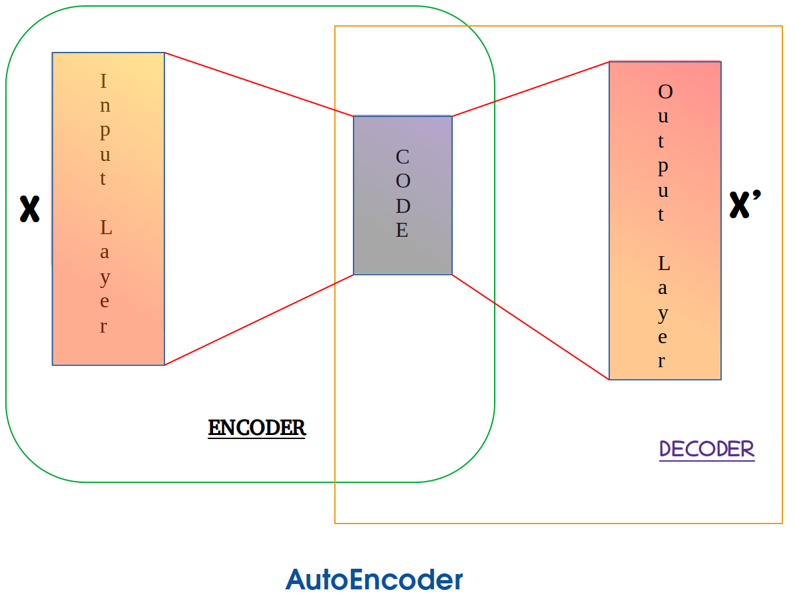
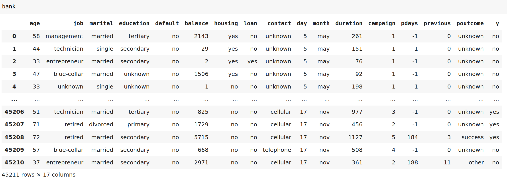
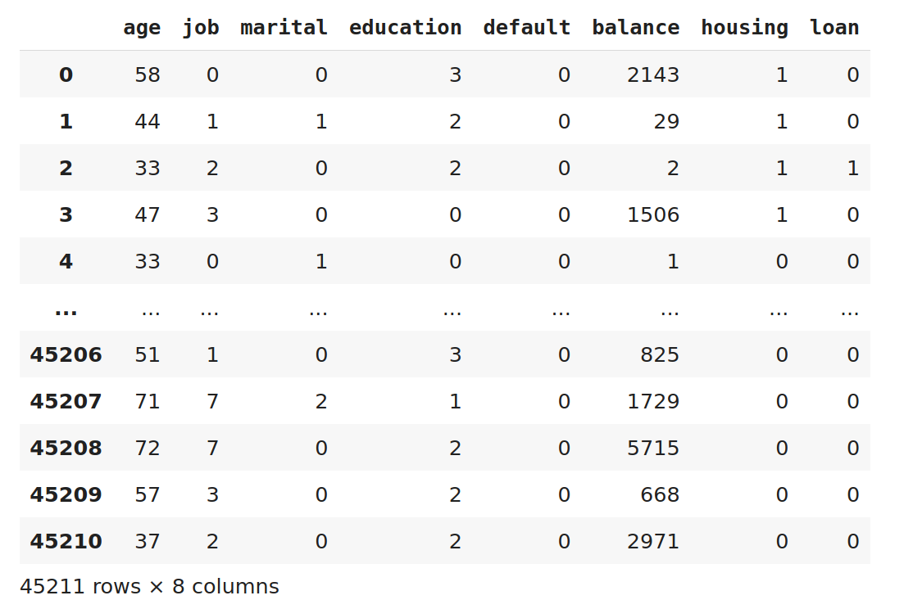
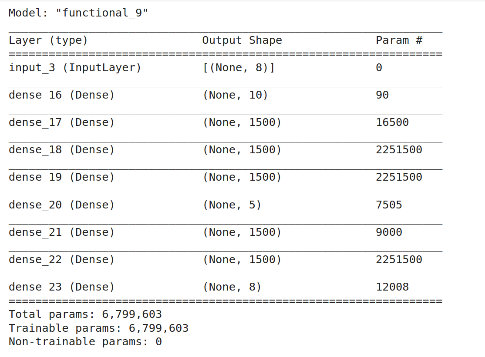
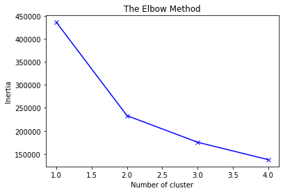
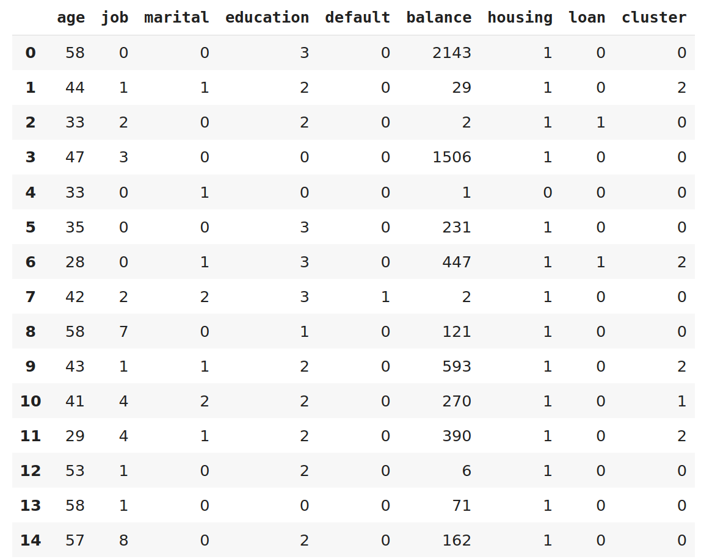
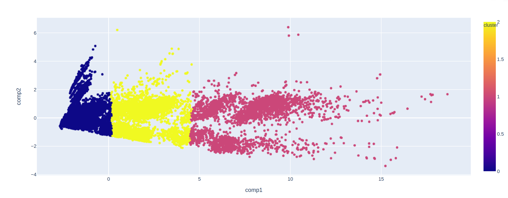
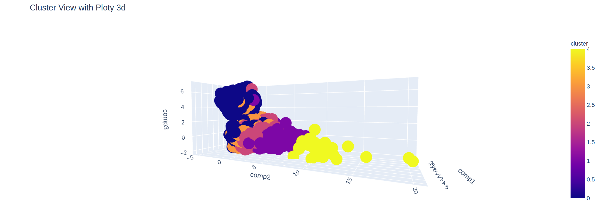

In questo post vediamo come suddividere la clientela di una banca in base ai dati a disposizione della banca
per promuovere operazioni di marketing.
Una descrizione dei dati usati per la simulazione si trova in fondo alla pagina **.

L'elaborazione si compone di 3 fasi.
La prima inizia con la predisposizione dei dati da elaborare, qui prendiamo i dati più rappresentativi e
trasformato i dati non numerici in codici numerici.
Appena i dati sono pronti tramite il modello di Deep Learning AutoEncoder riduciamo la tipologia di dati da 8 a 5.
La seconda fase consiste, in base ai 5 parametri rimasti, nel trovare il numero di cluster da creare.
Qui usiamo l'algoritmo K-Means e per decidere quanti cluster creare disegniamo il grafico dell'Elbow method da cui
prendiamo 3 come valore dei cluster ottimali.
A questo punto creiamo i 3 cluster ed inseriamo in un DataFrame per ogni cliente il relativo cluster di
appartenenza.
La terza fase consiste nel viasualizzare i cluster ottenuti in un grafico da cui possiamo valutare la validità
del risultato raggiunto essendo i punti di ogni cluster concentrati vicino al relativo centro senza dispersioni.
Vediamo i primi e gli ultimi record del DataFrame creato con i dati in input.

Qui vediamo il DataFrame dopo aver tolto le ultime colonne e la conversione dei valori
non numerici in codici numerici.

Iniziamo il programma con l'import delle librerie necessarie per eseguire quanto descritto sopra e la presentazione dei risultati.
%matplotlib inline
import pandas as pd
from datetime import date, timedelta
import keras
keras.backend.clear_session()
from matplotlib.widgets import TextBox
from sklearn.impute import SimpleImputer
from sklearn.preprocessing import StandardScaler
from sklearn.decomposition import PCA
from tensorflow.keras.layers import Input, Dense
from tensorflow.keras.models import Model, load_model,Sequential
from keras.optimizers import SGD
from collections import Counter
import numpy as np
import matplotlib.pyplot as plt
from sklearn import cluster
from matplotlib import cm,colors
def doKmeans(X, nclust):
model = KMeans(n_clusters= nclust)
model.fit(X)
clust_labels = model.predict(X)
cent = model.cluster_centers_
return (clust_labels, cent)
Normalizzazione dei valori in input per velocizzare i calcoli.
sc = StandardScaler()
X_scaled = sc.fit_transform(bank2)
Definizione del modello di Autoencoder. Inserendo 10 hidden layer, l'input con shape 8,
il risultato dell'encoder è di shape 5 che è l'input del decoder con risultato di 8. Segue la
compilazione con l'optimizer e la funzione di loss.
hidden_dim = 10
input = Input(shape=(8,))
enc = Dense(hidden_dim, activation='relu')(input)
enc = Dense(1500, activation='relu')(enc)
enc = Dense(1500, activation='relu')(enc)
enc = Dense(1500, activation='relu')(enc)
encoded = Dense(5, activation='relu')(enc)
dec = Dense(1500, activation='relu')(encoded)
dec = Dense(1500, activation='relu')(dec)
decoded = Dense(8)(dec)
# autoencoder
autoencoder = Model(datadf, decoded)
# usato per riduzione componenti
encoder = Model(datadf, encoded)
autoencoder.compile(optimizer= 'adam', loss='mean_squared_error')
Ora eseguiamo il modello inserendo in input i dati normalizzati. Al termine
otteniamo il modello con il sommario dove notiamo che
il modello ha utilizzato quasi 6 milioni e ottocentomila parametri.
autoencoder.fit(X_scaled, X_scaled, batch_size = 32, epochs = 20)
autoencoder.summary()

Ora utilizziamo il modello encoder per predirre il risultato ottenuto inserendo in input
i dati normalizzati. Così otteniamo come si vede nel riquadro sottostante la riduzione dei dati in input da shape
8 a 5.
pred = encoder.predict(X_scaled)
pred.shape
shape di pred : (45211, 5)
Passiamo alla fase successiva utilizzando l'algoritmo KMeans per ottenere i dati
che con il metodo Elbow possiamo scegliere il numero di cluster ottimale.
wcss = []
for i in range(1,pred.shape[1]):
kmeans = KMeans(n_clusters = i, init ='k-means++', random_state=0)
kmeans.fit(pred)
wcss.append(kmeans.inertia_) # valori per determinare cluster
plt.plot(range(1,pred.shape[1]), wcss,'bx-')
plt.title('The Elbow Method')
plt.xlabel('Number of cluster')
plt.ylabel('Inertia')
Il grafico sottostante mostra The Elbow Method dove possiamo notare che il numero di
clister ottimale è 3.

La fase successiva consiste nell'assegnazione tramite l'algoritmo K-Means del cluster per ogni cliente
e l'inserimento del numero cluster nel DataFrame. Calcoliamo anche il numero di clienti appartenenti a ciascun cluster.
clust_labels, centro = doKmeans(pred, 3)
kmeans = pd.DataFrame(clust_labels)
# aggiungo colonna df iniziale con cluster
bank2.insert((bank2.shape[1]),'kmeans',kmeans)
numeropercluster = Counter(clust_labels)
Counter({1: 31362, 2: 7145, 0: 6704})
Vediamo il DataFrame aggiornato con il cluster assegnato.

Ora utilizziamo il Principal component analysis (PCA) un algoritmo di riduzione lineare della dimensionalità
Con questo algoritmo utilizziamo solo 2 componenti, i più rappresentativi, creando un DataFrame
con i dati ottenuti.
pca = PCA(n_components = 2)
pca_data = pca.fit_transform(pred)
pcadf = pd.DataFrame(data=pca_data, columns=['comp1', 'comp2'])
pcadf = pd.concat([pcadf, pd.DataFrame({'cluster': kmeans[0]})],axis=1) #kmeans cluster definito con kmeans
fig = px.scatter(pcadf, x='comp1', y='comp2', color=pcadf['cluster'])
fig.show()
Grafico dei 3 cluster creati con K-Means.

Con gli stessi dati senza procedere ad una riduzione dei dati tramite il modello AutoEncoder
con Kmeans avevamo un elbow di 5 cioè 5 cluster e dopo aver eseguito la PCA per avere una
percentuale di rappresentatività vicina al 50% si dovevano utilizzare 3 componenti.
Nell'immagine sottostante vediamo una rappresentazione in 3D dei cluster creati.
Possiamo concludere che riducendo i dati con Autoencoder non solo non perdiamo rappresentatività ma
riusciamo anche ad avere un numero minore di cluster.
Grafico 3d con 5 cluster.

**
The data is related with direct marketing campaigns of a Portuguese banking institution.
The marketing campaigns were based on phone calls. Often, more than one contact to the same client was required, in order to access if the product (bank term deposit) would be (or not) subscribed.
The bank dataset with all examples from May 2008 to November 2010 has 45211 instances.
The classification goal is to predict if the client will subscribe a product of the bank the term deposit (variable y).
The dataset has 16 + output attribute our dependent variable.
The input attribute are our independent variables:
# bank client data:
1 - age (numeric)
2 - job : type of job (categorical: "admin.","unknown","unemployed","management","housemaid","entrepreneur","student", "blue-collar","self-employed","retired","technician","services")
3 - marital : marital status (categorical: "married","divorced","single"; note: "divorced" means divorced or widowed)
4 - education (categorical: "unknown","secondary","primary","tertiary")
5 - default: has credit in default? (binary: "yes","no")
6 - balance: average yearly balance, in euros (numeric)
7 - housing: has housing loan? (binary: "yes","no")
8 - loan: has personal loan? (binary: "yes","no") # related with the last contact of the current campaign:
9 - contact: contact communication type (categorical: "unknown","telephone","cellular")
10 - day: last contact day of the month (numeric)
11 - month: last contact month of year (categorical: "jan", "feb", "mar", ..., "nov", "dec")
12 - duration: last contact duration, in seconds (numeric)
13 - campaign: number of contacts performed during this campaign and for this client (numeric, includes last contact)
14 - pdays: number of days that passed by after the client was last contacted from a previous campaign (numeric, -1 means client was not previously contacted)
15 - previous: number of contacts performed before this campaign and for this client (numeric)
16 - poutcome: outcome of the previous marketing campaign (categorical: "unknown","other","failure","success") Output variable (desired target):
17 - y - has the client subscribed a term deposit? (binary: "yes","no")
For the project we use the following file granted from UCI Machine Learning Repository :
[Moro et al., 2011] S. Moro, R. Laureano and P. Cortez. Using Data Mining for Bank Direct Marketing:
An Application of the CRISP-DM Methodology. In P. Novais et al. (Eds.), Proceedings of the European
Simulation and Modelling Conference - ESM'2011, pp. 117-121, Guimarães, Portugal, October, 2011. EUROSIS. Available at:
[pdf] http://hdl.handle.net/1822/14838 [bib] http://www3.dsi.uminho.pt/pcortez/bib/2011-esm-1.txt